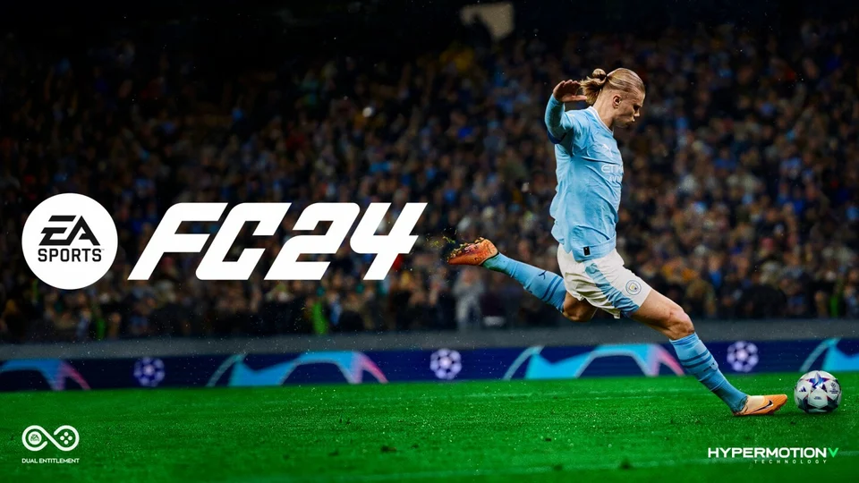
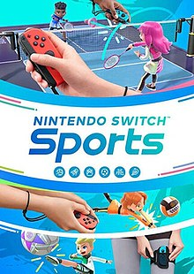

EA FC 2024
Following on from the fall out between EA and FIFA, this is the first game to be a stand alone EA game. For this the title of the game had to be changed from the iconic Fifa series to the new EA FC 2024. When the news broke about the partnership between EA and Fifa ending this caused fans to be worried about the direction the game would go especially with now not having the backing of Fifa for sponsorships. But they managed to release a new game with a new name but still keeping the origional features that fans have come to know from its predecessors. The game still has very similar features with updated teams and jerseys, ultimate team is still a similar format and other features that are synonymous with the franchise. There has been features improved such as graphics, performance and accessibility. Although there are still problems with the game that have been a prevelant issues with the last few titles in the franchise. There has been the issue with ultimate team and how "pay to win" game with the micro-transactions pushed on the player to succeed. There hasn't been many features changed which the fans have been upset about for the last multiple titles, but what the game does succeed at is what makes fans keep coming back for the new title each year. I would rate this game a 3.5/5.
Playstation Store Xbox Store Nintendo Switch Store Steam StoreNintendo Switch Sports
There are many iconic and incredible games that have with stood the test of time but not many as well as Wii sports. This game is still regarded as one of the greatest games and best selling games of all time. But the problem with the game for anybody that wants to play it is that it is only avaliable on the wii which is now an outdated console, which was why when it was announced that nintendo were bringing wii sports to the switch fans were very excited. Although it has the same games on it, the switch version of the game lost some sense of fun that the wii had. The controller for the wii was perfect for playing a game like wii sports but the nintendo switch controllers weren't as effective as the wii controller as emulating that same experience. It is a fun game but peopele were hoping that it would be the smae game brought to the modern console so more people could experience it but in trying to put a spin on it as not to re-release the same game, they inadvertently removed some of the simplistic charm that the game had. I would rate this game a 3/5, if you want to play a game like this then the best method would be to play the origional wii game but if you are unable to do that then this game would be a fitting substitute.
Nintendo Store